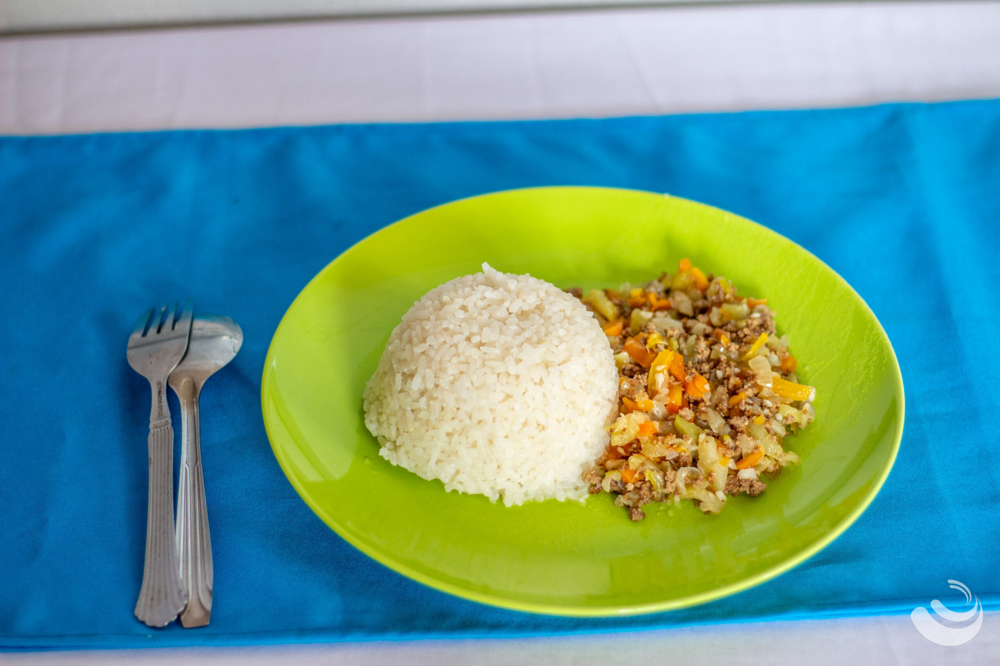
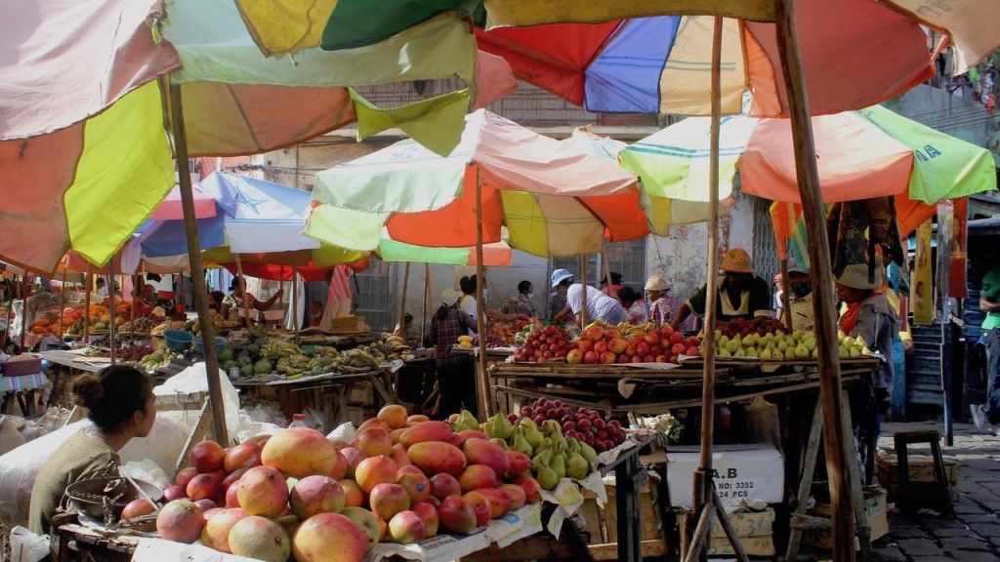

Gastronomie de Diego Suarez
Les saveurs de 7 régions et 22 provinces réunies
À Madagascar, et surtout à Diego Suarez, on trouve les meilleures cuisines des 7 régions et des 22 provinces du pays. Un carrefour de saveurs où se mélangent influences malgaches, indiennes, créoles, françaises et arabes pour une expérience culinaire unique.
Cuisine épicée
Fruits de mer
Fruits tropicaux
Vary (riz)
Spécialités à goûter
🍚
Vary sy laoka
Riz avec accompagnement traditionnel
🦞
Langouste grillée
Fraîchement pêchée dans la baie
🥭
Fruits tropicaux
Mangue, litchi, jacquier…
🍢
Brochettes de zébu
Incontournable des marchés locaux
🍛
Romazava
Plat national malgache aux brèdes
🍹
Jus de coco frais
Boisson locale désaltérante


